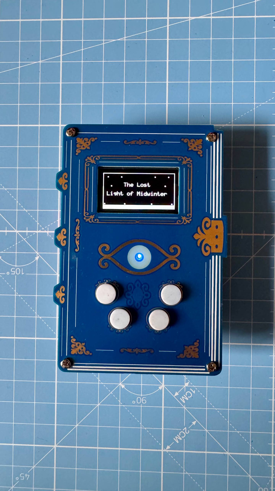
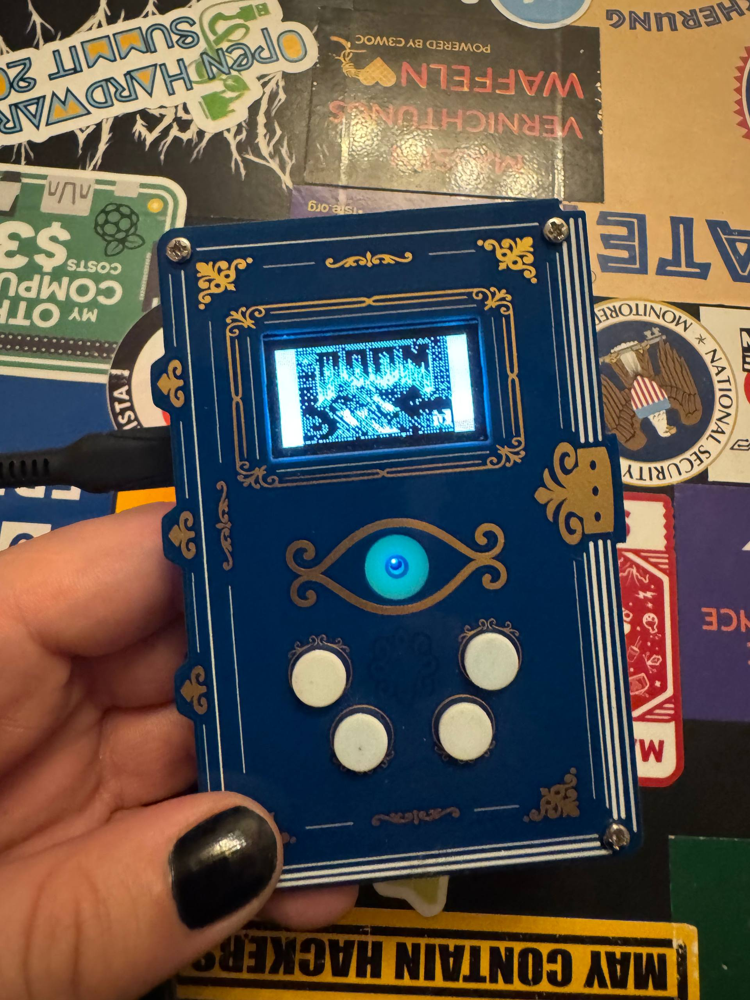
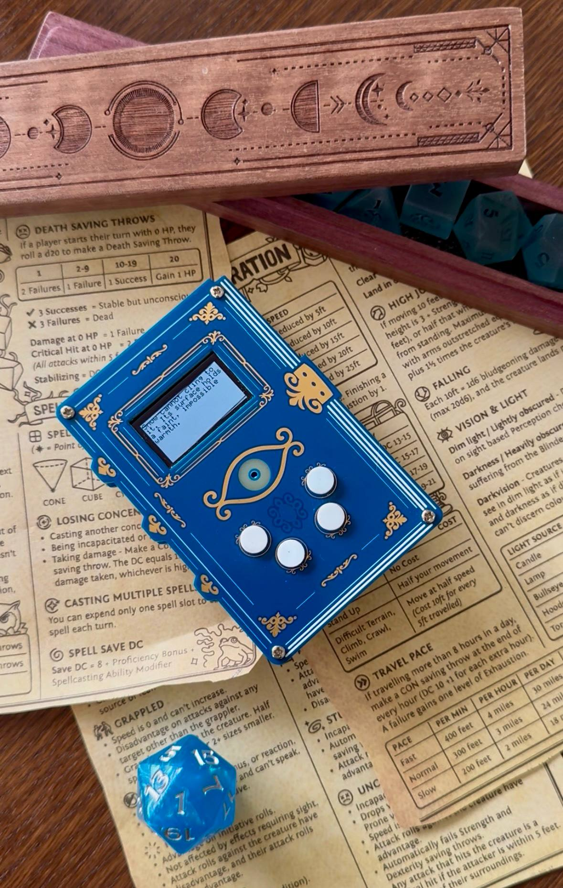
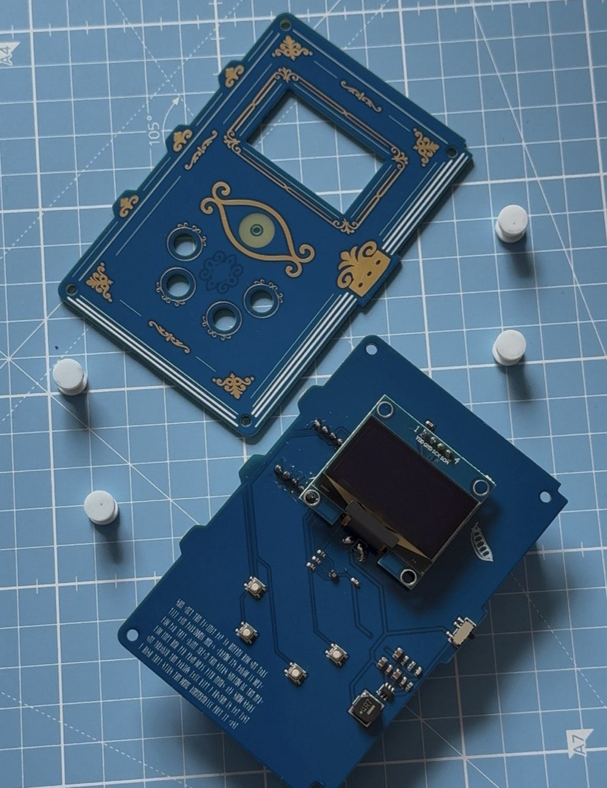
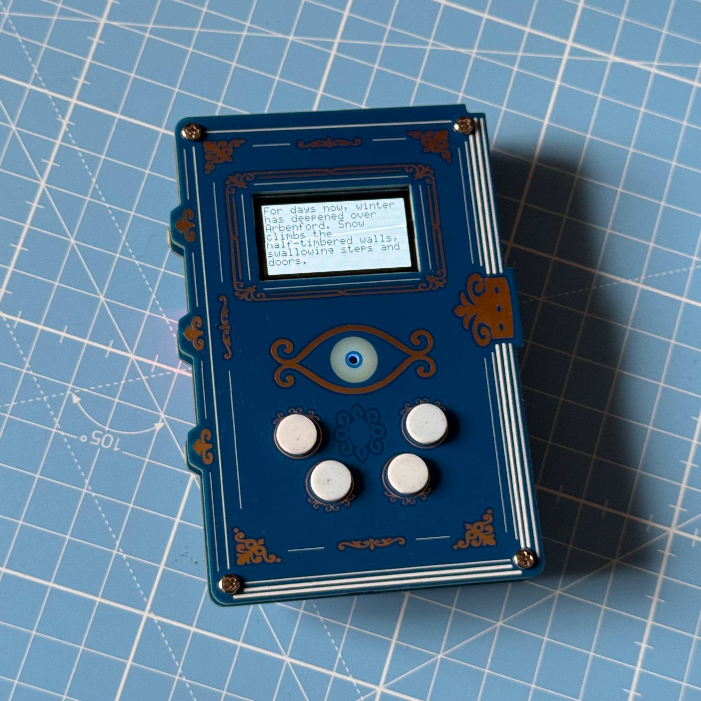

Printed Circuit Sorcery: The RP2040 Spell Tome


Of Spells and Circuit Boards: Why I built the Spell Tome
Same procedure as usual, some rambling in the beginning (you can skip it), but this time it'll lean towards short.
As I said before when talking about the d20 PCB: as I'm getting older, I find myself struggling with the same struggles as so many adults. While we may have more money available for unreasonable hobbies, the time for them keeps shrinking. So my strategy to get my little dopamine hits of special interest hyperfocus is to just merge my passions. And with my two lifelong main obsessions, DnD and technology, that is pleasantly easy. I simply started building DnD or campaign-themed circuit boards for my DnD players (you can learn more about this in my Hackaday Europe talk, don't ask me what I said, but I tried to talk about this). Which happens to solve another very common struggle for anyone pursuing a creative hobby with lots of physical output: with DnD players you acquire an approximately DnD-group-sized extra storage space more or less for free.
While this gave me a wonderful reason to build something in the first place, what I ended up building was (as so often) motivated by "that'd be kinda neat" and "I always wanted to do this". For a long time I've been in love with Gameboys and also with text adventures. So of course building a gaming handheld was very high up on my bucket list, and a text adventure seemed very fitting for a TTRPG-themed one.
Therefore it'd be totally fair to say I built the Tome because I can™ and used my players as a dumping ground for yet another of my progressively hard to justify hobby projects.

But let's face it, that was only part of the motivation. Most of it really comes down to the fact that I care: about my campaign, my sessions, and most importantly my players (and fear not, I won't bore you with sentimentality too much). The thing is, nonchalance has never exactly been my vibe. I enjoy caring for things or people, and I enjoy showing it.
DnD groups (or rather, TTRPG groups in general) are such a precious construct: one day you meet a couple of random strangers and decide to collaboratively hallucinate for an evening every second week. And before you know it, you're two years in and share laughter and tears and all the big emotions while you don't even know their last name.
There's magic in this and that should not be taken for granted. For me as the DM, my main motivation is always to channel this magic and to help my players and their characters feel like the heroes they certainly are to me (oof, never quote me on this sentence...).
And yet I'm astonishingly bad at expressing this in any common human-readable way (not TPKing them doesn't seem to get the point across). So their Christmas present is meant to be just that: a little copper, FR-4 and firmware manifestation of my care and appreciation and an attempt to give them more of the little heroic moments they deserve.
Which arguably is not necessarily more human-readable, but it's the thought that counts, or something like that.
The Magic is in...well, somewhere (not in the schematics tho)

The Spell Tome is deliberately simple under the hood because I initially had the naive hope that my players would finally dare to hack their Christmas present: to take it apart, reprogram it, look for easter eggs in the copper. But I was made aware that most people's first instinct when receiving a gift is usually not "how can I take that apart". Fair, I learned that lesson now (they'll get the next gift in a broken state and will have to repair it ^-^).
The main PCB functions as a carrier board for an OLED display and a Seeed XIAO RP2040. That way it can be easily soldered together and more importantly, reprogrammed easily, with all the usual RP2040 pico-sdk comfort (no, I'm not addicted to RP2040s, I can stop whenever I want).
Additionally, it comes with an RGB LED that functions as a status LED.
Four push-buttons can be used to navigate through the text adventure. Four push-buttons can be used to navigate through the text adventure. They have little 3D-printed caps (the maximum of my CAD skills).
And there's the usual SMD sprinkle of caps, power boost and so on, and so forth (see GitHub for specifics), all (hopefully) big enough so that it can still be hand-soldered (0603, if that's too small, lovingly, it's a skill issue). The whole thing is powered by two AAA batteries because there is no universe in which I'd trust a table of DnD players (and their pointy, mean little metal dice) with a LiPo.
By the way, in general a very good design principle for hardware meant for TTRPG groups is: "Would I leave a three-year-old alone with this?".
A second board functions just as a decorative cover that makes the whole PCB sandwich look like an actual tome: some ENIG and silkscreen artwork and keepout zones in eye shape for the status LED to shine through. Because as Hocus Pocus taught us, every proper spell tome needs an eye, obviously.
The idea behind this sandwich is to have something that can be held comfortably, much like a Gameboy. And well, since I still suck at CAD, it spares me designing an actual case.

Things get a little more exciting in the actual text adventure. Meaning, customisation-wise. The text adventure's story itself is pure Christmas cringe, I took a deep dive into cheesiness. And who am I going to fool, I'm an engineer and not a writer. Yet again, it's the thought that counts, or something like that.
The players can navigate through a choose-your-own-adventure-style game, with character/player-specific customised scenes and story branches based on the decisions you made along the way. How happy your ending is depends solely on said decisions as well. In the end, the real treasure of the story was the friends we made along the way (not for every player tho, some got fame or cupcakes).
My literary effusions also did not get better by the fact that I had to trim each sentence to fit onto a 1.3'' OLED display comfortably and readably. My goal was to achieve this classic, old-school text adventure feel of masterpieces like Dunnet. If you've ever played it, it has this wonderfully archaic rhythm of "you forcefully shove a shovel down your throat, and start choking. You are dead." that I tried to copy. Each button press should progress the story by exactly one sentence that'd fit on the screen. Somehow in my mind that would have made gameplay more comfortable. In reality tho, comfort has left the chat the moment I chose a 1.3'' display, I guess. Overall, depending on decisions, deaths and reading speed, the adventure makes for 30–45 minutes of playtime.
Another decision of questionable comfort that I deliberately made was the absence of any save points. Cynics would say the absence of such save points is only due to the fact that I hacked the firmware together on one long and sleepless weekend. But as a matter of fact, I genuinely decided against any saving possibility because the whole thing was supposed to mimic a DnD session during our Christmas break. And in an actual session you don't get the option to save before a decision either, after all.
There are several scenes in that story that are character- or player-specific. Sure, player and character are not the same. But in the end it's the player who feels things because of what happens to a character, so of course many things are catered to their tastes.
One thing I certainly learned from this is that writing effort explodes fast. Even if you decide on a relatively small set of custom scenes, with different story branches you end up writing a lot of custom content. And each and every one of those scenes in every branch comes with a lot of consideration. And while I had so much fun hiding little hints and winks for my players in there, I strongly recommend planning enough time for this (or spontaneously turn a Christmas gift into an Easter gift, been there, done that).
As usual, both firmware and hardware hide Easter Eggs. Since (to my knowledge) none of them have been discovered so far, I shall stay quiet about them. Just one fun fact: with one I really hesitated to put it in because it could genuinely give away the campaign's ending. But given the fact that my players never consciously discovered any of the Easter Eggs of their previous PCB gift, I got a little cocky.
Tome of DOOM: the classic on the Spell Tome
DOOM has been put on microwave ovens, pregnancy tests, and as of my last post on a uterus-PCB, so of course a Spell Tome is not safe either. Because while I do feel the hardware hacking community could (and maybe should) come up with a new running gag sooner or later, "does it run DOOM" remains the ultimate rite of passage for everything with a display and processor in it.
For this DOOM port I reused the same rp2040-doom base as with Clotty, but adapted it to the Spell Tome’s XIAO RP2040, four buttons, and 128×64 monochrome OLED. The original 320×200 framebuffer is downscaled to an aspect-preserving 102×64 image, converted from RGB565 to luminance, given a small gamma/contrast boost, and then reduced to 1-bit using a 4×4 Bayer dither matrix.
That turned out to be the main challenge: making DOOM still look vaguely like DOOM when you only have 8192 black-or-white pixels to work with. Much of the inspiration for this was taken from the famous pregnancy-test DOOM.
Controls are equally improvised: Up/Down move, Select shoots, and holding Back turns Up/Down into left/right and Select into use/open. I also had to disable the hardware side of piconet because it tried to claim the same I²C peripheral as the OLED.
Calling it playable would be a stretch, "navigable" seems more fitting.
But for a silly "look, you can truly repurpose that tome", it's definitely DOOM-ed enough. And for the first time since I started slapping DOOM on things, I can genuinely and truthfully blame the hardware for sucking at it.
A Grimoire of Copper and FR-4: What's next for the Tome
Back in May when I published the Tome's hardware design files, I was eager to publish the firmware right afterwards. But since then I swapped PCBs with a couple of people, both via mail across the globe and at conferences. And whenever I handed the spell tome and its included text adventure to someone, it felt a little awkward. The story is just so heavily customised to my respective players at the time. And no matter how much I tried to generalise the story or simply remove or rewrite the custom scenes, it remains very strongly something I did specifically for this wonderful set of people. Not to make it weird, but it gave me the sensation of reading an intimate letter out loud to an audience. In a relatively non-weird, DnD-platonic and PG-13 way, of course.
And of course I don't regret gifting the spell tome and story to anyone! It just made me feel a little exposed. So as of now, I'm still unsure if I'll ever push the original story. Maybe it'll remain something only a very small number of people will ever have the misfortune of being forced to read through. Maybe I'll rewrite it into a cringe Christmas story suitable for the general public.
In any case, as proven by DOOM, you can run quite a few other things on that hardware, so I dare you to get creative.